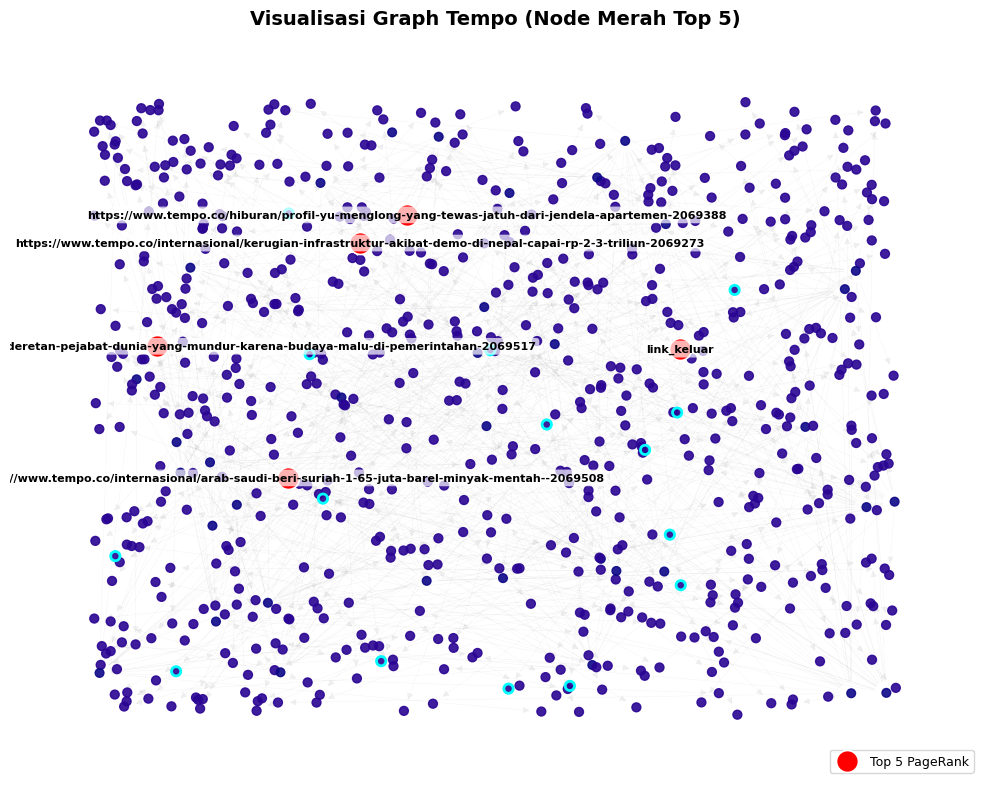

PAGERANK#
Latihan#
# ================================================================
# IMPLEMENTASI PAGERANK DENGAN VISUALISASI (Versi Google Colab)
# Dataset: web-Google_10k.txt
# ================================================================
import numpy as np
import networkx as nx
import matplotlib.pyplot as plt
# ============================================
# 1. Membaca File Edge List
# ============================================
file_path = "web-Google_10k.txt" # ubah sesuai lokasi upload kamu di Colab
edges = []
with open(file_path, "r") as f:
for line in f:
if line.startswith("#") or not line.strip():
continue
u, v = map(int, line.split())
edges.append((u, v))
# ============================================
# 2. Membangun Graph dan Menghitung PageRank
# ============================================
G = nx.DiGraph()
G.add_edges_from(edges)
print(f"Jumlah node: {G.number_of_nodes()}")
print(f"Jumlah edge: {G.number_of_edges()}")
# Hitung PageRank
pagerank_scores = nx.pagerank(G, alpha=0.85)
# Ambil 5 node teratas berdasarkan nilai PageRank
top_nodes = sorted(pagerank_scores.items(), key=lambda x: x[1], reverse=True)[:5]
print("\n=== 5 NODE TERPENTING BERDASARKAN PAGERANK ===")
for i, (node, score) in enumerate(top_nodes, start=1):
print(f"{i}. Node {node} -> PageRank = {score:.6f}")
# ============================================
# 3. Visualisasi Subgraph dari Node Terpenting
# ============================================
# Ambil 5 node teratas dan semua tetangga (1-hop) untuk visualisasi
top_node_ids = [n for n, _ in top_nodes]
neighbors = set(top_node_ids)
for n in top_node_ids:
neighbors.update(G.predecessors(n))
neighbors.update(G.successors(n))
# Buat subgraph
subG = G.subgraph(neighbors).copy()
# Tentukan ukuran node berdasarkan nilai PageRank
sizes = [pagerank_scores.get(n, 0) * 10000 for n in subG.nodes()]
colors = ["#ff6961" if n in top_node_ids else "#77dd77" for n in subG.nodes()]
plt.figure(figsize=(10, 8))
pos = nx.spring_layout(subG, seed=42, k=0.4)
nx.draw(
subG,
pos,
with_labels=True,
node_size=sizes,
node_color=colors,
font_size=8,
arrowsize=10,
)
plt.title("Visualisasi Subgraph - 5 Node Terpenting PageRank", fontsize=14)
plt.show()
Jumlah node: 10000
Jumlah edge: 78323
=== 5 NODE TERPENTING BERDASARKAN PAGERANK ===
1. Node 486980 -> PageRank = 0.006515
2. Node 285814 -> PageRank = 0.004633
3. Node 226374 -> PageRank = 0.003301
4. Node 163075 -> PageRank = 0.003288
5. Node 555924 -> PageRank = 0.002756
# ================================================================
# IMPLEMENTASI PAGERANK DENGAN VISUALISASI (Versi Graph Menyatu)
# ================================================================
import numpy as np
import networkx as nx
import matplotlib.pyplot as plt
# ============================================
# 1. Membaca File Edge List
# ============================================
file_path = "web-Google_10k.txt"
edges = []
with open(file_path, "r") as f:
for line in f:
if line.startswith("#") or not line.strip():
continue
u, v = map(int, line.split())
edges.append((u, v))
# ============================================
# 2. Membangun Graph dan Menghitung PageRank
# ============================================
G = nx.DiGraph()
G.add_edges_from(edges)
print(f"Jumlah node: {G.number_of_nodes()}")
print(f"Jumlah edge: {G.number_of_edges()}")
# Hitung PageRank
pagerank_scores = nx.pagerank(G, alpha=0.85)
# Ambil 5 node teratas berdasarkan nilai PageRank
top_nodes = sorted(pagerank_scores.items(), key=lambda x: x[1], reverse=True)[:5]
print("\n=== 5 NODE TERPENTING BERDASARKAN PAGERANK ===")
for i, (node, score) in enumerate(top_nodes, start=1):
print(f"{i}. Node {node} -> PageRank = {score:.6f}")
# ============================================
# 3. Visualisasi Graph Menyatu
# ============================================
# Ambil 5 node teratas dan semua tetangga (1-hop)
top_node_ids = [n for n, _ in top_nodes]
neighbors = set(top_node_ids)
for n in top_node_ids:
neighbors.update(G.predecessors(n))
neighbors.update(G.successors(n))
# Buat subgraph dari node penting dan tetangganya
subG = G.subgraph(neighbors).copy()
# Ukuran & warna node
sizes = [pagerank_scores.get(n, 0) * 15000 for n in subG.nodes()]
colors = ["#ff6961" if n in top_node_ids else "#77dd77" for n in subG.nodes()]
# Gunakan layout yang lebih "rapat dan menyatu"
plt.figure(figsize=(12, 10))
pos = nx.kamada_kawai_layout(subG) # layout alami, tidak terpisah
nx.draw_networkx_nodes(subG, pos, node_size=sizes, node_color=colors, alpha=0.9)
nx.draw_networkx_edges(subG, pos, arrows=True, arrowstyle='-|>', arrowsize=8, alpha=0.4)
nx.draw_networkx_labels(subG, pos, font_size=7)
plt.title("Visualisasi Graph Menyatu - Top 5 Node Terpenting PageRank", fontsize=14)
plt.axis('off')
plt.show()
Jumlah node: 10000
Jumlah edge: 78323
=== 5 NODE TERPENTING BERDASARKAN PAGERANK ===
1. Node 486980 -> PageRank = 0.006515
2. Node 285814 -> PageRank = 0.004633
3. Node 226374 -> PageRank = 0.003301
4. Node 163075 -> PageRank = 0.003288
5. Node 555924 -> PageRank = 0.002756
---------------------------------------------------------------------------
KeyboardInterrupt Traceback (most recent call last)
Cell In[2], line 61
59 # Gunakan layout yang lebih "rapat dan menyatu"
60 plt.figure(figsize=(12, 10))
---> 61 pos = nx.kamada_kawai_layout(subG) # layout alami, tidak terpisah
62 nx.draw_networkx_nodes(subG, pos, node_size=sizes, node_color=colors, alpha=0.9)
63 nx.draw_networkx_edges(subG, pos, arrows=True, arrowstyle='-|>', arrowsize=8, alpha=0.4)
File ~/.local/lib/python3.12/site-packages/networkx/drawing/layout.py:710, in kamada_kawai_layout(G, dist, pos, weight, scale, center, dim)
707 pos = dict(zip(G, np.linspace(0, 1, len(G))))
708 pos_arr = np.array([pos[n] for n in G])
--> 710 pos = _kamada_kawai_solve(dist_mtx, pos_arr, dim)
712 pos = rescale_layout(pos, scale=scale) + center
713 return dict(zip(G, pos))
File ~/.local/lib/python3.12/site-packages/networkx/drawing/layout.py:727, in _kamada_kawai_solve(dist_mtx, pos_arr, dim)
724 meanwt = 1e-3
725 costargs = (np, 1 / (dist_mtx + np.eye(dist_mtx.shape[0]) * 1e-3), meanwt, dim)
--> 727 optresult = sp.optimize.minimize(
728 _kamada_kawai_costfn,
729 pos_arr.ravel(),
730 method="L-BFGS-B",
731 args=costargs,
732 jac=True,
733 )
735 return optresult.x.reshape((-1, dim))
File /usr/local/python/3.12.1/lib/python3.12/site-packages/scipy/optimize/_minimize.py:713, in minimize(fun, x0, args, method, jac, hess, hessp, bounds, constraints, tol, callback, options)
710 res = _minimize_newtoncg(fun, x0, args, jac, hess, hessp, callback,
711 **options)
712 elif meth == 'l-bfgs-b':
--> 713 res = _minimize_lbfgsb(fun, x0, args, jac, bounds,
714 callback=callback, **options)
715 elif meth == 'tnc':
716 res = _minimize_tnc(fun, x0, args, jac, bounds, callback=callback,
717 **options)
File /usr/local/python/3.12.1/lib/python3.12/site-packages/scipy/optimize/_lbfgsb_py.py:407, in _minimize_lbfgsb(fun, x0, args, jac, bounds, disp, maxcor, ftol, gtol, eps, maxfun, maxiter, iprint, callback, maxls, finite_diff_rel_step, **unknown_options)
401 task_str = task.tobytes()
402 if task_str.startswith(b'FG'):
403 # The minimization routine wants f and g at the current x.
404 # Note that interruptions due to maxfun are postponed
405 # until the completion of the current minimization iteration.
406 # Overwrite f and g:
--> 407 f, g = func_and_grad(x)
408 elif task_str.startswith(b'NEW_X'):
409 # new iteration
410 n_iterations += 1
File /usr/local/python/3.12.1/lib/python3.12/site-packages/scipy/optimize/_differentiable_functions.py:296, in ScalarFunction.fun_and_grad(self, x)
294 if not np.array_equal(x, self.x):
295 self._update_x_impl(x)
--> 296 self._update_fun()
297 self._update_grad()
298 return self.f, self.g
File /usr/local/python/3.12.1/lib/python3.12/site-packages/scipy/optimize/_differentiable_functions.py:262, in ScalarFunction._update_fun(self)
260 def _update_fun(self):
261 if not self.f_updated:
--> 262 self._update_fun_impl()
263 self.f_updated = True
File /usr/local/python/3.12.1/lib/python3.12/site-packages/scipy/optimize/_differentiable_functions.py:163, in ScalarFunction.__init__.<locals>.update_fun()
162 def update_fun():
--> 163 self.f = fun_wrapped(self.x)
File /usr/local/python/3.12.1/lib/python3.12/site-packages/scipy/optimize/_differentiable_functions.py:145, in ScalarFunction.__init__.<locals>.fun_wrapped(x)
141 self.nfev += 1
142 # Send a copy because the user may overwrite it.
143 # Overwriting results in undefined behaviour because
144 # fun(self.x) will change self.x, with the two no longer linked.
--> 145 fx = fun(np.copy(x), *args)
146 # Make sure the function returns a true scalar
147 if not np.isscalar(fx):
File /usr/local/python/3.12.1/lib/python3.12/site-packages/scipy/optimize/_optimize.py:79, in MemoizeJac.__call__(self, x, *args)
77 def __call__(self, x, *args):
78 """ returns the function value """
---> 79 self._compute_if_needed(x, *args)
80 return self._value
File /usr/local/python/3.12.1/lib/python3.12/site-packages/scipy/optimize/_optimize.py:73, in MemoizeJac._compute_if_needed(self, x, *args)
71 if not np.all(x == self.x) or self._value is None or self.jac is None:
72 self.x = np.asarray(x).copy()
---> 73 fg = self.fun(x, *args)
74 self.jac = fg[1]
75 self._value = fg[0]
File ~/.local/lib/python3.12/site-packages/networkx/drawing/layout.py:744, in _kamada_kawai_costfn(pos_vec, np, invdist, meanweight, dim)
741 pos_arr = pos_vec.reshape((nNodes, dim))
743 delta = pos_arr[:, np.newaxis, :] - pos_arr[np.newaxis, :, :]
--> 744 nodesep = np.linalg.norm(delta, axis=-1)
745 direction = np.einsum("ijk,ij->ijk", delta, 1 / (nodesep + np.eye(nNodes) * 1e-3))
747 offset = nodesep * invdist - 1.0
File /usr/local/python/3.12.1/lib/python3.12/site-packages/numpy/linalg/linalg.py:2583, in norm(x, ord, axis, keepdims)
2580 elif ord is None or ord == 2:
2581 # special case for speedup
2582 s = (x.conj() * x).real
-> 2583 return sqrt(add.reduce(s, axis=axis, keepdims=keepdims))
2584 # None of the str-type keywords for ord ('fro', 'nuc')
2585 # are valid for vectors
2586 elif isinstance(ord, str):
KeyboardInterrupt:
<Figure size 1200x1000 with 0 Axes>
Page Rank menggunakan data keluaran link teknik informatika#
# BAGIAN 1: Import Library dan Baca File
import pandas as pd
import networkx as nx
import matplotlib.pyplot as plt
import numpy as np
file_name = 'semua_link_informatika2.csv'
try:
# Baca file CSV tanpa header (diasumsikan 2 kolom: source & target)
df = pd.read_csv(file_name, header=None)
# Buat graf berarah dari dua kolom pertama
G = nx.from_pandas_edgelist(
df,
source=0,
target=1,
create_using=nx.DiGraph()
)
print(f"✅ Berhasil membaca file: {file_name}")
print(f"Jumlah node: {G.number_of_nodes()}")
print(f"Jumlah edge: {G.number_of_edges()}")
except FileNotFoundError:
print(f"❌ File '{file_name}' tidak ditemukan. Pastikan file berada di dalam.")
except Exception as e:
print(f"⚠️ Terjadi error saat membaca file: {e}")
✅ Berhasil membaca file: semua_link_informatika2.csv
Jumlah node: 1681
Jumlah edge: 1653
# BAGIAN 2: Periksa isi dataset dan jumlah edge
edges = pd.read_csv(
file_name,
comment="#",
header=None,
names=["FromNodeId", "ToNodeId"],
engine="python",
sep=None, # auto deteksi delimiter
on_bad_lines="skip" # lewati baris rusak
)
edges = edges.dropna(subset=["FromNodeId", "ToNodeId"])
print(f"Jumlah edges: {len(edges)}")
print(edges.head())
Jumlah edges: 1653
FromNodeId \
1 https://informatika.trunojoyo.ac.id/
2 https://informatika.trunojoyo.ac.id/
3 https://informatika.trunojoyo.ac.id/
4 https://informatika.trunojoyo.ac.id/
5 https://informatika.trunojoyo.ac.id/
ToNodeId
1 https://informatika.trunojoyo.ac.id/
2 https://informatika.trunojoyo.ac.id/bidang-min...
3 https://informatika.trunojoyo.ac.id/bidang-min...
4 https://informatika.trunojoyo.ac.id/bidang-min...
5 https://informatika.trunojoyo.ac.id/bidang-min...
# BAGIAN 3: Buat Graph dari edges
edges = edges.dropna(subset=["FromNodeId", "ToNodeId"])
try:
edges["FromNodeId"] = edges["FromNodeId"].astype(int)
edges["ToNodeId"] = edges["ToNodeId"].astype(int)
except:
pass # kalau bukan angka, biarkan string
G = nx.DiGraph()
G.add_edges_from(edges[["FromNodeId", "ToNodeId"]].values)
print(f"Jumlah node dalam graph: {G.number_of_nodes()}")
print(f"Jumlah edge dalam graph: {G.number_of_edges()}")
Jumlah node dalam graph: 130
Jumlah edge dalam graph: 1492
# BAGIAN 4: Hitung PageRank dan cari node penting
pagerank = nx.pagerank(G, alpha=0.85, max_iter=100, tol=1e-06)
pagerank_df = (
pd.DataFrame(list(pagerank.items()), columns=["Node", "PageRank"])
.sort_values("PageRank", ascending=False)
.reset_index(drop=True)
)
print("🏆 Top 5 Node dengan PageRank Tertinggi:")
print(pagerank_df.head(5))
🏆 Top 5 Node dengan PageRank Tertinggi:
Node PageRank
0 https://informatika.trunojoyo.ac.id/ 0.010508
1 https://informatika.trunojoyo.ac.id/prestasi-m... 0.010508
2 https://informatika.trunojoyo.ac.id/unit-kegia... 0.010508
3 https://informatika.trunojoyo.ac.id/unit-kegia... 0.010508
4 https://informatika.trunojoyo.ac.id/unit-kegia... 0.010508
# CELL 5: Visualisasi Graph Informatika (Warna Cerah, Outline Kontras - Versi Ringkas)
import matplotlib.pyplot as plt
import networkx as nx
# Tutup figure sebelumnya jika masih aktif
plt.close('all')
# Ukuran figure lebih kecil
fig, ax = plt.subplots(figsize=(10, 8))
# Layout ringan tapi stabil
pos = nx.random_layout(G, seed=42)
# Warna node berdasarkan nilai PageRank
node_colors = [pagerank[n] for n in G.nodes()]
node_sizes = [v * 30000 for v in pagerank.values()] # sebelumnya 50000 → diperkecil
# Ambil Top 5 & Top 20 berdasarkan PageRank
top5_nodes = pagerank_df.head(5)["Node"].tolist()
top20_nodes = pagerank_df.head(20)["Node"].tolist()
top5_labels = {n: str(n) for n in top5_nodes}
# =========================
# Gambar Semua Node (Gradasi)
# =========================
nx.draw_networkx_nodes(
G, pos,
node_size=node_sizes,
node_color=node_colors,
cmap=plt.cm.plasma,
alpha=0.9,
ax=ax
)
# =========================
# Outline untuk Top 20 Node
# =========================
nx.draw_networkx_nodes(
G, pos,
nodelist=top20_nodes,
node_size=[pagerank[n]*33000 for n in top20_nodes], # sebelumnya 55000
node_color='none',
edgecolors="#00FFFF",
linewidths=2,
ax=ax
)
# =========================
# Node Merah untuk Top 5 Node
# =========================
nx.draw_networkx_nodes(
G, pos,
nodelist=top5_nodes,
node_color="red",
edgecolors="white",
linewidths=1.2,
node_size=250, # sebelumnya 350
label='Top 5 PageRank',
ax=ax
)
# =========================
# Edge (transparan tipis)
# =========================
nx.draw_networkx_edges(
G, pos,
alpha=0.1,
width=0.3,
edge_color="gray",
ax=ax
)
# =========================
# Label untuk Top 5 Node
# =========================
nx.draw_networkx_labels(
G, pos,
labels=top5_labels,
font_color="black",
font_size=8,
font_weight="bold",
bbox=dict(facecolor="white", edgecolor="none", alpha=0.7, boxstyle="round,pad=0.3"),
ax=ax
)
# =========================
# Tampilan Akhir
# =========================
ax.set_title(
"Visualisasi Graph Informatika (Node Merah Top 5)",
fontsize=14, fontweight="bold", pad=10
)
ax.legend(scatterpoints=1, fontsize=9, loc="lower right")
ax.axis("off")
plt.tight_layout()
plt.show(block=True)
plt.close(fig)

Page Rank Menggunakan Data Link Berita#
import pandas as pd
import networkx as nx
import matplotlib.pyplot as plt
import numpy as np
file_name = 'tempo_links.csv'
try:
# Baca file CSV tanpa header (diasumsikan 2 kolom: source & target)
df = pd.read_csv(file_name, header=None)
# Buat graf berarah dari dua kolom pertama
G = nx.from_pandas_edgelist(
df,
source=0,
target=1,
create_using=nx.DiGraph()
)
print(f"✅ Berhasil membaca file: {file_name}")
print(f"Jumlah node: {G.number_of_nodes()}")
print(f"Jumlah edge: {G.number_of_edges()}")
except FileNotFoundError:
print(f"❌ File '{file_name}' tidak ditemukan. Pastikan file berada di dalam'.")
except Exception as e:
print(f"⚠️ Terjadi error saat membaca file: {e}")
✅ Berhasil membaca file: tempo_links.csv
Jumlah node: 737
Jumlah edge: 701
edges = pd.read_csv(
file_name,
comment="#",
header=None,
names=["FromNodeId", "ToNodeId"],
engine="python",
sep=None, # auto deteksi delimiter
on_bad_lines="skip" # lewati baris rusak
)
edges = edges.dropna(subset=["FromNodeId", "ToNodeId"])
print(f"Jumlah edges: {len(edges)}")
print(edges.head())
Jumlah edges: 701
FromNodeId \
id_berita page
2070711 https://www.tempo.co/indeks?page=1&category=ru...
2070710 https://www.tempo.co/indeks?page=1&category=ru...
2070705 https://www.tempo.co/indeks?page=1&category=ru...
2070701 https://www.tempo.co/indeks?page=1&category=ru...
ToNodeId
id_berita link_keluar
2070711 https://www.tempo.co/politik/yusril-bilang-pra...
2070710 https://www.tempo.co/politik/daftar-11-pejabat...
2070705 https://www.tempo.co/politik/koalisi-sipil-bak...
2070701 https://www.tempo.co/politik/wapres-gibran-tid...
edges = edges.dropna(subset=["FromNodeId", "ToNodeId"])
try:
edges["FromNodeId"] = edges["FromNodeId"].astype(str)
edges["ToNodeId"] = edges["ToNodeId"].astype(str)
except:
pass
# Buat graph berarah
G = nx.DiGraph()
G.add_edges_from(edges[["FromNodeId", "ToNodeId"]].values)
print(f"Jumlah node dalam graph: {G.number_of_nodes()}")
print(f"Jumlah edge dalam graph: {G.number_of_edges()}")
Jumlah node dalam graph: 737
Jumlah edge dalam graph: 701
pagerank = nx.pagerank(G, alpha=0.85, max_iter=100, tol=1e-06)
pagerank_df = (
pd.DataFrame(list(pagerank.items()), columns=["Node", "PageRank"])
.sort_values("PageRank", ascending=False)
.reset_index(drop=True)
)
print("🏆 Top 5 Node dengan PageRank Tertinggi:")
print(pagerank_df.head(5))
🏆 Top 5 Node dengan PageRank Tertinggi:
Node PageRank
0 link_keluar 0.002408
1 https://www.tempo.co/hiburan/profil-yu-menglon... 0.001358
2 https://www.tempo.co/internasional/kerugian-in... 0.001358
3 https://www.tempo.co/internasional/deretan-pej... 0.001358
4 https://www.tempo.co/internasional/arab-saudi-... 0.001358
# CELL 5: Visualisasi Graph Informatika (Warna Cerah, Outline Kontras - Versi Ringkas)
import matplotlib.pyplot as plt
import networkx as nx
# Tutup figure sebelumnya jika masih aktif
plt.close('all')
# Ukuran figure lebih kecil
fig, ax = plt.subplots(figsize=(10, 8))
# Layout ringan tapi stabil
pos = nx.random_layout(G, seed=42)
# Warna node berdasarkan nilai PageRank
node_colors = [pagerank[n] for n in G.nodes()]
node_sizes = [v * 30000 for v in pagerank.values()] # sebelumnya 50000 → diperkecil
# Ambil Top 5 & Top 20 berdasarkan PageRank
top5_nodes = pagerank_df.head(5)["Node"].tolist()
top20_nodes = pagerank_df.head(20)["Node"].tolist()
top5_labels = {n: str(n) for n in top5_nodes}
# =========================
# Gambar Semua Node (Gradasi)
# =========================
nx.draw_networkx_nodes(
G, pos,
node_size=node_sizes,
node_color=node_colors,
cmap=plt.cm.plasma,
alpha=0.9,
ax=ax
)
# =========================
# Outline untuk Top 20 Node
# =========================
nx.draw_networkx_nodes(
G, pos,
nodelist=top20_nodes,
node_size=[pagerank[n]*33000 for n in top20_nodes], # sebelumnya 55000
node_color='none',
edgecolors="#00FFFF",
linewidths=2,
ax=ax
)
# =========================
# Node Merah untuk Top 5 Node
# =========================
nx.draw_networkx_nodes(
G, pos,
nodelist=top5_nodes,
node_color="red",
edgecolors="white",
linewidths=1.2,
node_size=250, # sebelumnya 350
label='Top 5 PageRank',
ax=ax
)
# =========================
# Edge (transparan tipis)
# =========================
nx.draw_networkx_edges(
G, pos,
alpha=0.1,
width=0.3,
edge_color="gray",
ax=ax
)
# =========================
# Label untuk Top 5 Node
# =========================
nx.draw_networkx_labels(
G, pos,
labels=top5_labels,
font_color="black",
font_size=8,
font_weight="bold",
bbox=dict(facecolor="white", edgecolor="none", alpha=0.7, boxstyle="round,pad=0.3"),
ax=ax
)
# =========================
# Tampilan Akhir
# =========================
ax.set_title(
"Visualisasi Graph Tempo (Node Merah Top 5)",
fontsize=14, fontweight="bold", pad=10
)
ax.legend(scatterpoints=1, fontsize=9, loc="lower right")
ax.axis("off")
plt.tight_layout()
plt.show(block=True)
plt.close(fig)
